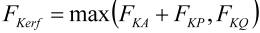

|
|
|


轴向载荷下的螺栓连接（单螺栓）
直接输入出现的轴向力 FAmax 和 FAmin。所需夹紧力 FKerf 按以下公式定义：
|  | (42.4) |
根据轴向载荷传递所需夹紧力 FKQ 和密封功能 FKP 计算。FKA 用于防止所需夹紧载荷下出现张口，由程序计算。
English Original
Bolted joint under axial load (single bolt)
The occurring axial forces FAmax and FAmin are entered directly. The necessary clamp load FKerf is defined in accordance with
| (42.4) |
based on the required clamp load for axial load transmission FKQ and the sealing function FKP are calculated. FKA is present to prevent gaping in the required clamp load and is calculated by the program.